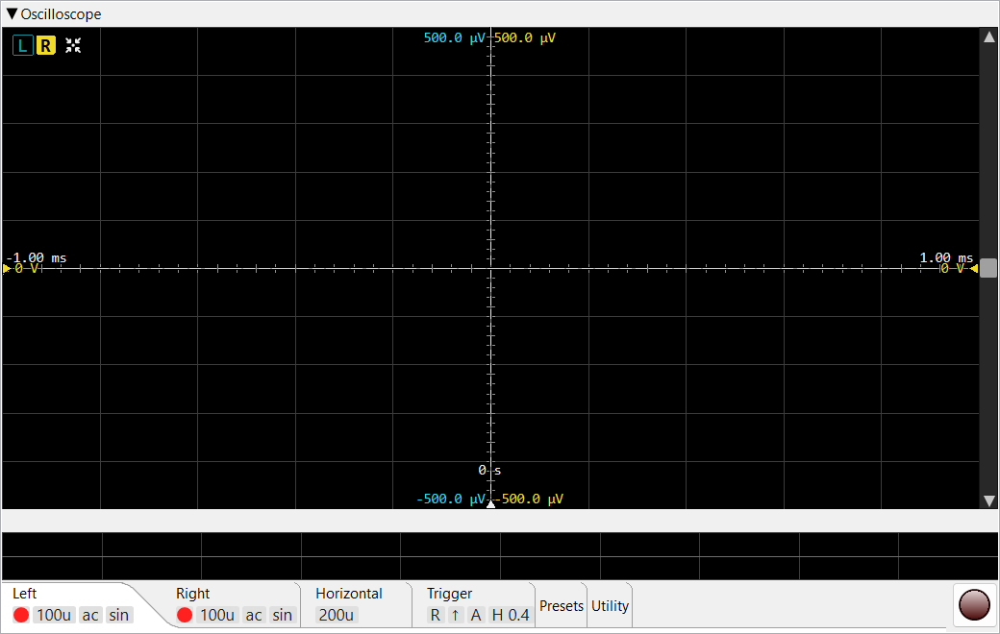

This page covers the oscilloscope's controls. For how it works inside — triggering, sin x/x reconstruction between samples, mains-hum rejection — see Theory of operation ▸ Oscilloscope.
Live time-domain view of the captured signal. Two independent
channels (L / R) share the trigger; each has its own V/div,
coupling, interpolation, and vertical offset. The capture rate
readout in the top-right corner (cap/s) shows how
many frames per second the view is rendering.

L / R
select which channel drives the
measurement table and the movable channel-offset marker — they do
not switch settings tabs. A button is disabled when
its channel is switched off in the
Left / Right
tab. L / R and Auto-Setup are always
shown; the rest appear once measurements exist
(Header buttons).0 s;
the time offset in seconds is shown above the handle. See
Trigger-offset marker.Row of square buttons at the top-left of the scope trace area. L / R and Auto-Setup are always shown; the rest (gauge, external window, stats toggle, reset) appear once measurements have been computed. There is no maximise button here.
Select which channel drives the measurement table and the channel-offset handle — they do not switch settings tabs. The button background takes the channel's trace colour when selected, and L and R are independent.
The link to the tabs runs the other way: a header button is disabled when that channel is switched off in its Left / Right tab (the per-channel enable), and re-enables when the channel is turned back on there.
One-shot fit: adjusts the time base so roughly 1.5 periods fit on screen, and the V/div so the trace spans ~75 % of the vertical area. Uses the currently-selected channel's measured period and Vpp.
Toggles the entire measurement table overlay on and off. When hidden, only the trace and the L / R buttons remain.
Pops the measurement table out into a separate tool window so it can sit alongside the main shell. Visible only when the table itself is visible. Closing the tool window returns the table to the main view.
Shows / hides the avg / min / max / σ columns of the
measurement table. The worker keeps computing them regardless; the
toggle only affects rendering.
Red counterclockwise-arrow button (the "roll back to the start"
reset). Clears the rolling-window statistics history that feeds the
avg / min / max / σ columns, so the next frame starts a
fresh averaging window. Useful after changing test conditions.
Compact grid in the top-left of the trace area. Eight rows, up to five
value columns (cur + the four stats columns).
| Row | Meaning |
|---|---|
| Vpp | Peak-to-peak voltage (max − min over the visible frame). |
| Vrms | Root-mean-square voltage of the frame. |
| Vmean | DC mean — useful for spotting offsets. |
| Tp | Period (seconds), computed precisely as 1 / f from the measured frequency below. |
| Tr | Rise time (10 % → 90 % of Vpp). |
| Tf | Fall time (90 % → 10 %). |
| f | Frequency of the trigger-channel signal, measured to sub-sample precision; the period Tp = 1 / f is derived from it. |
| Duty | Duty cycle as % of period — high-time / period. |
Rolling-window statistics over a configurable averaging window (see Preferences → Oscilloscope → Measurement average). σ is the population standard deviation. The window is ~33 s at 30 fps by default; the Reset button wipes the statistics.
A horizontal marker line whose triangle handle is on the right edge. The marker can be moved only by dragging that handle up or down; double-clicking the handle returns it to the vertical centre. The current trigger level (in volts, for the active trigger channel) is shown next to the handle. Hidden while a file is loaded (a static signal has no trigger).
A vertical marker line whose triangle handle is on the bottom edge.
It sets where in the window the trigger event sits. Move it only by
dragging the handle left / right; double-click returns it to the
centre (0 s). The time offset in seconds is shown
above the handle. Hidden in file mode.
Each enabled channel has its own vertical-offset marker (dashed zero-line + triangle handle), and both handles are on the LEFT edge. The offset voltage is shown beside each handle. Only the currently-selected channel's marker is draggable — the other channel's handle is dimmed and shown for reference only. Move the active marker by dragging its handle; double-click recentres it.
A vertical scrollbar on the right pans the trace up / down (the voltage offset, both channels together). A horizontal scrollbar along the bottom pans left / right through time. Each scrollbar pans one axis only — it never zooms — but its thumb is resized by the view to show the visible fraction, so it tracks zoom: change V/div or t/div and the thumb grows or shrinks to match. Click the empty track to page toward the pointer, or hold the button down to keep paging until the thumb reaches the cursor. Zoom with the mouse wheel over the canvas.
The horizontal scrollbar appears only when an audio file is loaded — it is there to move a long recording left / right. During live capture there is nothing earlier to scroll back to, so it stays hidden.
The settings-tab strip at the bottom of the pane holds per-channel, trigger and utility settings. The Left, Right, Horizontal and Trigger tabs paint a row of tiles under the tab label showing their key values while the tab body is collapsed; the Presets / Utility / Save / Load tabs carry no tiles.
Controls for the left channel. Contains the channel toggle, V/div selector, AC/DC button, and Sin/Lin checkbox. Same layout for the Right tab.
Square toggle that enables / disables the channel. When off, the trace isn't drawn and the channel can't be picked as the trigger source.
Vertical resolution, as a 1-2-5-10 list from 1 µV/div to
500 V/div. The wheel / arrows / ↑↓ keys step through the list;
you can also type any value (with a µV / mV
/ V suffix) for a setting off the list. Independent per
channel.
AC mode subtracts the running DC mean from the displayed trace so a small AC component on top of a large DC offset is visible. The underlying measurements are still computed on the raw samples — only the displayed trace is shifted.
Per-channel checkbox shown with a small sinc-shape image. When checked, the trace is rendered with Lanczos sinc interpolation (proper bandlimited reconstruction); when unchecked, straight-line interpolation between samples. It only makes a visible difference when adjacent sample points are at least ~2 px apart on screen (i.e. zoomed in on the time axis); closer than that, the two look identical and sinc just costs more CPU.

Identical layout to the Left tab — channel toggle, V/div, AC/DC and Sin/Lin, but for the right channel.

Horizontal resolution, as a 1-2-5-10 list from 1 µs/div to
1 s/div (no ns/div). The wheel / arrows / ↑↓ keys step the list,
or type any value (µs / ms / s)
for a setting off the list. The trace centre stays put on a t/div change
— only the visible window's width changes.

Pair of L / R toggles picking which channel drives the trigger comparator.
↑ / ↓ pair. Rising edge triggers when the signal crosses the trigger level going up; falling edge for going down.
A / N / S — Auto, Normal, Single.
Active only when the mode is Single. Pressing it arms the next single-shot capture.
Checkbox + step selector in division units (0.0 .. 5.0 in 0.1
steps). Schmitt-style trigger hysteresis: a rising-edge
trigger fires only when the signal first dropped below
(level − hyst) and then crossed above
(level + hyst). This stabilises the trigger on a weak or
noisy signal — without it, noise around the level causes a flurry of
false triggers and a jittery trace. The selector greys out when the
checkbox is off; the value is preserved when toggled.
Checkbox, enabled only when the generator is in Dual tone form (greyed out for every other waveform). When on, the scope overlays the dimmed |f₁−f₂| beat envelope of the two tones on top of the live trace, in the trigger channel's colour — so you can see the slow beat the two close tones produce and stabilise the trigger on it.

Save and recall complete scope set-ups. In the name field type a name for the current configuration and press Save — it stores every per-channel and per-trigger setting (V/div, AC/DC, Sin/Lin, t/div, trigger channel / edge / mode, hysteresis enable + value). To restore one, pick a previously-saved name with the arrow on the right of the field and press Load. Delete removes the selected preset (after a confirmation).

Renders the scope pane to a PNG at a chosen resolution and lets you save it to disk (or copy it). The render uses an offscreen replica of the pane with the settings tabs collapsed (so the trace dominates), and at the chosen size — independent of the visible window.
Opens the calibration dialog which derives the ADC's full-scale voltage from a known reference signal (a calibrator or a precision generator) and saves it in preferences. Disabled until a capture is running.

Writes the most recent capture to an audio file. The duration field (a single input in seconds) sets how much to save; the open-file button picks the destination; the Save button writes the file.

Plays back an audio file as the scope's data source instead of the live
ADC. The open-audio button picks the file — any
WAV / AIFF / FLAC, not only files
this scope saved. This is a plain waveform viewer for the file:
no triggering or measurements are available on a loaded signal, and
the FFT analyser does not run over the scope-loaded audio.
The Left, Right, Horizontal and Trigger tabs show a row of small tiles under the tab label with that tab's key values (the other tabs have none). Tiles are passive and have tooltips explaining the value they show; they stay visible even when the tab body is collapsed.
An LED tile on the Left / Right tab, shown only while that channel is enabled (absent when the channel is off).
The channel's vertical resolution, short form (e.g. 1m,
500m, 1).
ac or dc — the channel's coupling.
sin when sinc interpolation is on, lin
when off.
The horizontal resolution, short form — e.g. 200u,
1m, 20m.
L or R — which channel is currently used to arm
the trigger.
↑ for rising, ↓ for falling.
A, N or S — Auto, Normal, Single.
Shown only when hysteresis is enabled; the number is the hysteresis window
in divisions (e.g. H 2.0). The absence of this tile means
hysteresis is off.